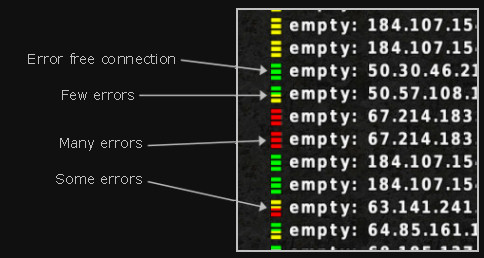
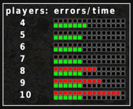

AssaultCube servers
Server process
The dedicated server runs in the shell only (no graphics), with increased priority. However, it uses very little CPU time and memory, so you can run one in the background, or at the same time as the client if you want to host a game and play in it. The default server ports are UDP 28763 (game) and 28764 (info). If you choose to set your own port as X (with the -f option) it will automatically use X+1 for the info port! See the Get Started Guide to find out how to join a server.
Main Configuration
The easiest way to configure the AssaultCube server is through the options in config/servercmdline.txt. The server scripts, assaultcube_server.bat on windows or assaultcube_server.sh on linux, use this method by default. All the possible command line options are documented in this file, and you simply have to uncomment (remove the //'s from the start of the line) and edit the ones you want to use.
You can still assign the options on the command line if you have an existing server, or you prefer this method. The command line options can also be obtained from the command line section of this documentation.
When you've configured your server, run the script to start it. You should see the message:
looking up assault.cubers.net... master server registration succeededIf you don't see this, use the website search facility to search for the output you do see. The most common reason for failure is incorrectly forwarded ports.
LAN/private server
A server automatically acts as a LAN server, and any clients on the same subnet will be able to connect through the Join to a LAN server menu option. If you want the server to remain private, and not be displayed on the public in-game server list, you must use the -m option to change the master server. It's common to use -mlocalhost to achieve this, but any other hostname or IP address will do.
Number of clients
Deciding on the maximum number of clients (-c option) that can connect to your server can be a difficult task. The maximum you can have, and still register with the Master Server, is 16, but the maximum that your server can efficiently support is dictated by the upstream bandwidth of your internet connection. If you overload your connection with too many clients, they will all suffer from lag spikes, regardless of geographical distance from the server.
The server list gives an indication of a server's error rate; green is good, red is bad. Error rate can be affected by line quality and/or limited bandwidth. Pressing F9, followed by F2 brings up a further graphic showing how the error rate is affected by client connections.
|  |
 F9 ⇒ F2: It looks like this server could do with having its max. clients reduced to 6 |
Map rotation
In the map rotation file specified with the -r option (default: config/maprot.cfg), you can specify the map, mode, time and voting for your server. Each line defines one round. The optional arguments of minplayer, maxplayer and skiplines empower you to change which lines will be played when your server is rather empty or closer to full.
| map | Map filename without extension. Only use standard maps and maps from your packages/maps/servermaps folder, otherwise the map won't start. |
| mode | Game mode number. One of: Team Deathmatch (0), Deathmatch (2), Pistol Frenzy (6), Team Pistol Frenzy (16), Capture the Flag (5), Hunt the Flag (13), Keep the Flag (15), Team Keep the Flag (14), Team Survivor (4), Survivor (3), Last Swiss Standing (9), Team Last Swiss Standing (17), One Shot One Kill (10), Team One Shot One Kill (11) |
| time | Game time in minutes. Usually 15 minutes for flag modes, 10 minutes for all other modes. |
| vote | 1: allow players to vote for another map/mode, 0: only an admin can change the map/mode |
| minplayer | If specified, the server will skip the map if fewer than the required players are connected at time of game start. |
| maxplayer | If specified, the server will skip the map if more than the allowed players are connected at time of game start. |
| skiplines | If the map actually got played (depending on minplayer and maxplayer), the server will skip the specified number of (used) lines in the maprotation before picking the next map. This can be used to prevent the same map being played twice in a row. |
Minplayer and maxplayer numbers are only checked when a new game is picked from the map rotation. If the player number changes during gameplay, no action will be taken.
Example:
// server side maprotations // WARNING: You can NOT use CubeScript in there // Use the following scheme... // map:mode:time:allowVote[:minplayer[:maxplayer[:skiplines]]] // tdm ac_complex:0:10:1 ac_depot:0:10:1 ac_desert:0:10:1 ac_mines:0:10:1 // ctf ac_mines:5:10:1 ac_depot:5:10:1 // ac_arctic ac_arctic : 0:10: 1: 4: 7: 1 // tdm, 10 minutes, 4..7 players ac_arctic :11:10: 1: 7: 0: 0 // tosok, 10 minutes, 8.. players // one short game on ac_snow, either osok or deathmatch (pseudorandom) ac_snow :10: 6: 1: 0: 1: 7 // osok, 6 minutes, 0..1 players ac_snow : 2: 6: 1: 2: 2: 6 // dm, 6 minutes, 2 players ac_snow :10: 6: 1: 3: 3: 5 // osok, 6 minutes, 3 players ac_snow : 2: 6: 1: 4: 4: 4 // dm, 6 minutes, 4 players ac_snow :10: 6: 1: 5: 5: 3 // osok, 6 minutes, 5 players ac_snow : 2: 6: 1: 6: 6: 2 // dm, 6 minutes, 6 players ac_snow :10: 6: 1: 7: 7: 1 // osok, 6 minutes, 7 players ac_snow : 0: 6: 1: 8:11: 0 // tdm, 6 minutes, 8..11 players
The first line, ac_complex:0:10:1, means, the map ac_complex is played in mode 0 (Team Deathmatch) for 10 minutes. The connected players are allowed to vote for a different map/mode.
The ac_arctic-block will play team deathmatch or team one shot one kill on ac_arctic, depending on the number of players; for 4 to 7 players it will be team deathmatch, for 8 or more players it will be tosok; if less than 4 players are on the server, the map will be skipped. (Notice the skipline = 1 in the first ac_arctic line (tdm) - this will skip the tosok line, if tdm actually gets played.)
The last block will play only one match on ac_snow, but depending on the number of players with varying gamemode; for less than 8 players and an even number it will be deathmatch, for uneven numbers osok, with more than 8 players team deathmatch will be played.
Important: Do not use the maprot file to force the same map or mode repeatedly. Servers with map rotations containing less than two different maps (or three if they are all the same mode) may be removed from the public server list. Also, do only use standard maps and maps from your packages/maps/servermaps folder!
IP Blacklist
In the blacklist file specified with the -B option (default: config/serverblacklist.cfg), you can specify IP addresses and IP address ranges to be denied access to your server. Each line defines one IP address (range).
You can use three different schemes to specify IP address ranges:
1.2.3.4 ⇒ ban a single IP
1.2.3.4/24 ⇒ ban an IP block using CIDR notation (here: 1.2.3.0 - 1.2.3.255)
1.2.3.4 - 2.3.4.5 ⇒ ban an IP range
If a player from a banned IP address tries to connect to your server, he will get an error message: "connection refused due to ban".
Important: The AC development team reserves the right to ban players centrally, usually proven cheats. This may result in players NOT in your blacklist being banned from your server. Everything possible is done to prevent innocent players from being banned.
Nickname Blacklist
In the nickname blacklist file specified with the -K option (default: config/nicknameblacklist.cfg), you can configure the nickname blacklist and the nickname whitelist.
Whenever a player connects to a server (or changes his nickname), the nickname is compared to the whitelist and the blacklist. First, the nickname (as a whole) is searched in the whitelist. If the nickname is in the whitelist, the player's IP and password are checked (if required). If an IP range or password requirement is not met, the player gets kicked. If the nickname is not in the whitelist, it is checked against the blacklist. If a blacklist entry matches, the player gets kicked.
To prevent whitelist entries being misused by other players, each entry can be secured by one or more IP ranges and one or more passwords. IP ranges are very convenient to use. For players with static IP, this is a very secure method to prevent others from using the nickname. If the IP is dynamic, it depends on how big the used IP range is. A single /16 range should be secure enough for most cases. If the range is bigger, the IP range will not block others sufficiently. In those cases, passwords can be used.
The following commands can be used in nicknameblacklist.cfg:
- accept nickname [IP range ...] [password ...]
- Add nickname to the whitelist. IP ranges and passwords are optional; if IP ranges are specified, only connects from those ranges are allowed; if one or more passwords are specified, the connect password has to match one of them.
- block nicknamefragment1 [nicknamefragment2 ...]
- Block nicknames that contain all specified fragments (up to 5).
- blocki nicknamefragment1 [nicknamefragment2 ...]
- Block nicknames that contain all specified fragments (up to 5), ignoring case.
- accept, block and blocki can be shortened to a, b and bi
- 'accept' has higher priority than 'block'
- accept matches whole nicknames; block matches parts of nicknames
- accept and block commands are case sensitive; the blocki command ignores case
- the order of lines/commands in the file is irrelevant; no sorting or grouping is required
- 'accept' commands can be split up into several commands by using the same nickname
Forbidden words file
If there are things you just don't want people to say in your server, this file, specified with the -g option (default: config/forbidden.cfg), contains example words and phrases which will be barred from public display. If a client types one of these words or phrases, it will be displayed on their HUD only, along with a warning. If you wish to disable this function, just remove every entry from the list.
Server password file
In the server password file specified with the -X option (default: config/serverpwd.cfg), you can specify admin passwords and passwords to bypass server bans. Each line defines one password.
Example:
// list of additional server admin passwords // WARNING: You can NOT use CubeScript in here!! // one password per line // Use the following scheme... // password [denyadmin] // optional: if denyadmin is set to '1' then // the password can only be used to connect to the server in case of ban, not to claim admin Lorem 1 ipsum dolor 0
In the above example three passwords are defined: Lorem, ipsum and dolor.
ipsum and dolor are full admin passwords. They can be used to claim admin, connect to a full server and to get over a server ban.
Lorem is a less powerful password: it can only be used to connect to a server that has a pending ban on the user. This kind of password is useful, whenever a blacklist range ban affects innocent players.
Colouring
You can use colours to set your server apart from the others. The "Message of the day" (MOTD), the server description and the additional server information can all be coloured.
To change a colour to another, use \f plus a corresponding number or letter. The following colours are available.
| 0 | green |
| 1 | blue |
| 2 | yellow |
| 3 | red |
| 4 | gray |
| 5 | white |
| 6 | dark brown |
| 7 | dark red |
| 8 | magenta |
| 9 | orange |
| A B C D | red set |
| E F G H | yellow set |
| I J K L | green set |
| M N O P | cyan set |
| Q R S T | blue set |
| U V W X | magenta set |
| Y | light gray |
| Z | dark gray |
Example of usage:
\f5This colour is \f1blue\f5 and this is a different \fRblue\f5.
...produces:
This colour is blue
and this is a different blue.
Additional Server Information
An important enhancement to your server description is the additional server information file specified by -I (default: config/serverinfo_en.txt). The text in this can be seen in-game by pressing F9 when your server is highlighted in the server list, or by pressing Escape and selecting Get additional server information when connected to the server. You can use this file to provide extended information about your server, such as contact details, server location, where demos can be downloaded from, clan information, etc. The file contains formatting help to assist you.
Administration
Cheating
Cheating is a problem that can't be solved entirely. AssaultCube is open source, so everyone who knows how to compile it can easily modify the source to do whatever he wants; that's the problem of open source games. The fact that most of the game logic is client-side, to save bandwidth, makes it even easier to cheat. There is no way to completely avoid this abuse, but cheats should be kicked from the game as soon as possible, to ensure fair play for everyone else.
Server Admin
There is a client role a player can claim called admin. It can be claimed by the owner of a server (or players the owner trusts) to take control over what is happening when they are present. Claiming admin state requires a password that matches the server configuration.
The main advantage of the admin role is its overriding vote power. A 'yes' (F1) or 'no' (F2) vote from an admin will be the deciding vote immediately. Read more about being an admin of a server on the AssaultCube wiki.
Related commands:
- setadmin - become admin on a server
- connectadmin - connect to a server and become admin
- giveadmin - gives the master state to a player
Use the setadmin command to claim admin if you are already connected to a sever. However if you are locked out of your own server because you are banned, master mode is private or because all client slots are taken, you can use the connectadmin command to get control back. If you want to leave the server in the hands of a certain player giveadmin can be used to give control to a honest player.
The admin password is best configured using the -X option, but can also be set with -x on the command line.
Server logs
By default, a running server will log to a file in the main AssaultCube folder (Windows), or the gamedata folder (Mac) or to the syslog (linux). The level of detail in the log can be controlled with the -LF or -LS options.
The log can be used as reference for IP addresses of connected clients, a record of things said during a game or an indication of suspicious client activity (using the game's anticheat coding), and contains many other pieces of information.
Kill Messages
You can control how kills are reported in your log with the kill messages file, specified with the -E option (default: config/serverkillmessages.cfg). These messages will appear in your log only; you can't control what messages the clients see.
Demos
By default, a server will store records of the previous 5 games in RAM, as downloadable demos. It's possible to change the number of stored demos with the -D option, and you can also write the demos to disk, and change the location and file prefix, using the -W option.
As a responsible server owner, you may be approached by players who were on your server, requesting a demo they may have forgotten to get in-game, or a piece of information from the log. Releasing these is, of course, at your discretion.
Important: Server modifications
Obviously AssaultCube is an open source game, and the server code is open to modification. You may find that some part of the server code can be improved (please let us know if this is the case), or that it doesn't provide a bit of functionality that you require. You're welcome to compile your own server binary, provided that any changes you make don't affect the gameplay. We want to ensure that all clients connecting to public servers are aware of the game modes, ammo and health settings, game physics, etc., and that there are no surprises. If your server is deemed to have a gameplay-affecting modification, it will be removed from the master server list.